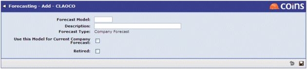
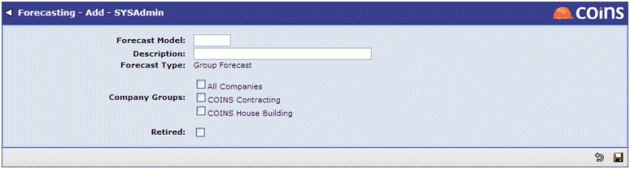

To create a new forecast model:
- Go to Forecast Models.
- Select which Type of model you want to create and click
 .
. - When creating a new Company Forecast Model the following screen will appear:

- When creating a new Group Forecast Model a slightly different screen will appear:

- Fill in the fields (refer to the side-frame help).
- Click
 .
.
After you save the main details for the forecast model, some additional tabs will become available: Views, Columns and Rows.